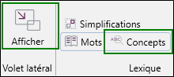
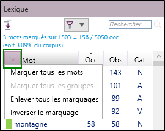

UTILISATION DU VOLET LEXIQUE
Le volet Lexique est un élément essentiel pour l’exploration d’un corpus. Il liste l’ensemble des mots ou concepts présents et permet de naviguer dans le corpus. Ce volet permet par exemple, de connaître les mots les plus fréquemment cités et d’afficher les observations contenant un mot ou un concept donné.
Afficher les mots : volet Lexique
Pour afficher les mots du texte dans le volet Lexique :
-
Dans le bandeau, cliquez sur l’onglet Accueil.
-
Cliquez sur le bouton Afficher, puis sur le bouton Mots.

Le volet Lexique contenant la liste des mots du corpus s’affiche dans l’explorateur latéral.
Afficher les observations contenant des mots sélectionnés à l'aide du marquage
Lorsqu’un mot est marqué, il est surligné en jaune dans les observations et seules les observations le contenant sont affichées dans la zone de travail.
Pour marquer un élément (mot ou concept), il suffit de cliquer dessus dans le lexique.
REMARQUE : Il est possible de désactiver le filtrage sur les observations en cliquant sur Voir toutes les observations du groupe Tris et filtres, depuis la partie Corpus.

Il est possible d’utiliser différentes couleurs pour marquer les mots sélectionnés dans le volet Lexique. Pour ce faire :
-
Effectuez un clic-droit sur le mot à marquer.
-
Sélectionnez la couleur souhaitée.

Afficher les concepts : volet Lexique
Les concepts renvoient à des thèmes qui sont identifiés automatiquement par Sphinx iQ3 en fonction des mots cités et de leur environnement. Les concepts sont classés en différents niveaux, des thèmes les plus généraux (il y en a 28) aux concepts très détaillés.
Pour afficher les mots du texte dans le volet Lexique :
-
Dans le bandeau, cliquez sur l’onglet Accueil.
-
Cliquez sur le bouton Afficher, puis sur le bouton Concepts.

Le volet Lexique liste l’ensemble des concepts évoqués dans le corpus.
Afficher les observations relatives à un concept à l'aide du marquage
Lorsqu’un concept est marqué dans le volet Lexique, les observations faisant référence à ce concept apparaissent dans la zone de travail. Il est possible d’afficher les observations de plusieurs concepts dans la zone de travail en cliquant sur les différents concepts du lexique. Dans ce cas toute l'observation est surlignée en jaune.

REMARQUE : Notez que la colonne Concept de la zone de travail indique le concept évoqué dans l’observation. Par défaut, seul le concept principal est affiché dans cette colonne, mais il est possible d’afficher tous les concepts évoqués dans la colonne Concept, pour chacune des observations.
Outil de marquage rapide
Le volet Lexique offre la possibilité de marquer très rapidement l'ensemble des éléments, d'effacer tous les marquages, ou d'inverser le marquage (efface le marquage des éléments marqués et marque les éléments non-marqués).
